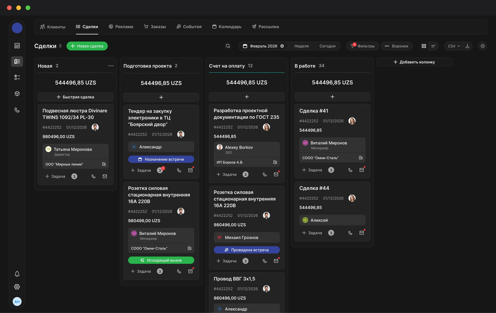
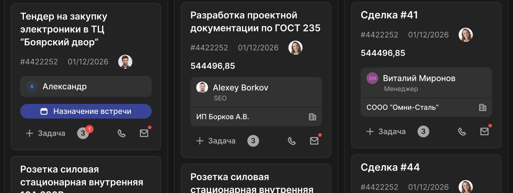
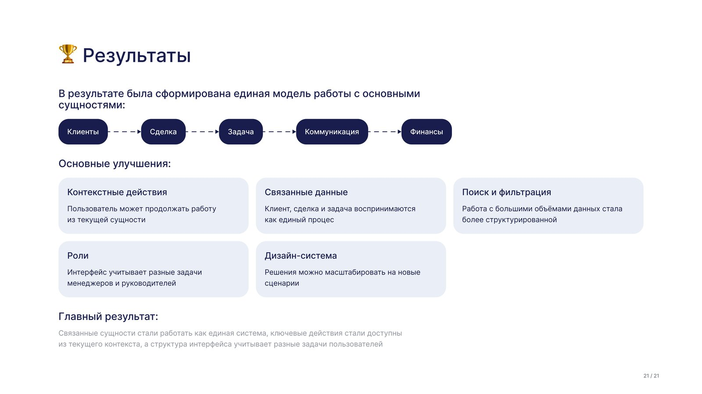

Канбан сделок: воронка по этапам, быстрые действия на карточках, поиск и фильтры
CRM-платформа для малого и среднего бизнеса: клиенты, сделки, задачи и коммуникации в одном месте. Моя зона в продукте, где есть также реклама, рассылки, заказы и финансовый учёт, — ядро системы. Я проводила UX-исследование, проектировала структуру, сценарии и интерфейсы клиентов, сделок и задач и поддерживала дизайн-систему.
Работа с клиентами и сделками была растянута между разделами. Чтобы выполнить связанное действие, пользователь уходил в другую часть системы, повторно искал уже известного клиента и заново вводил данные. Сами пользователи не считали это проблемой: они просто привыкли так работать.
Сократить лишние переходы и повторные действия: сделать так, чтобы клиент, сделка и задача открывались из одного контекста.

Проверила прототип на юзабилити-тестировании с пятью пользователями и доработала места, где они спотыкались: добавила создание сделки в карточку клиента, показала задачу внутри сделки, усилила видимость фильтра, добавила текстовую подпись к статусу. Карточки, статусы и состояния собрала в единую дизайн-систему.
-42%
времени на создание клиента, 2:10 → 1:15
-38%
действий для создания сделки, 16 → 10
-57%
переходов между разделами, 7 → 3
По итогам юзабилити-теста, 5 пользователей.
Пользователь работает с клиентом, сделкой и задачей, не покидая контекста, а руководители получают сводную аналитику по продажам и команде.
